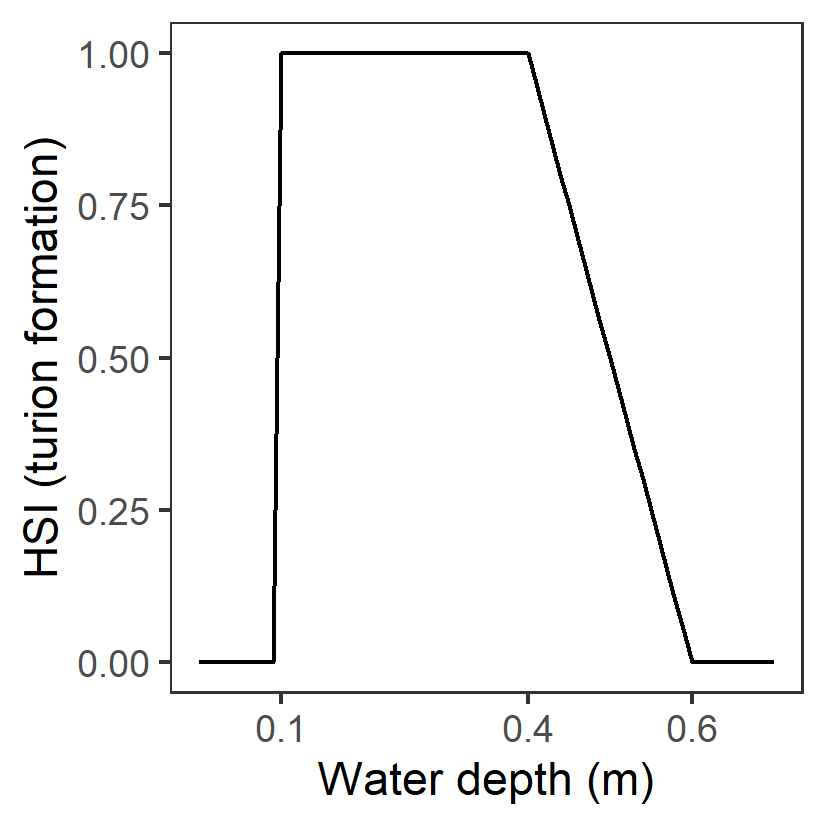
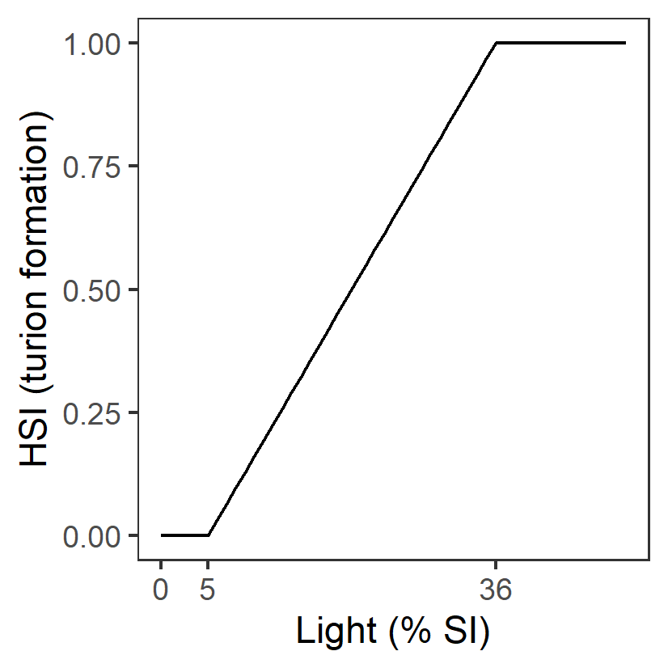
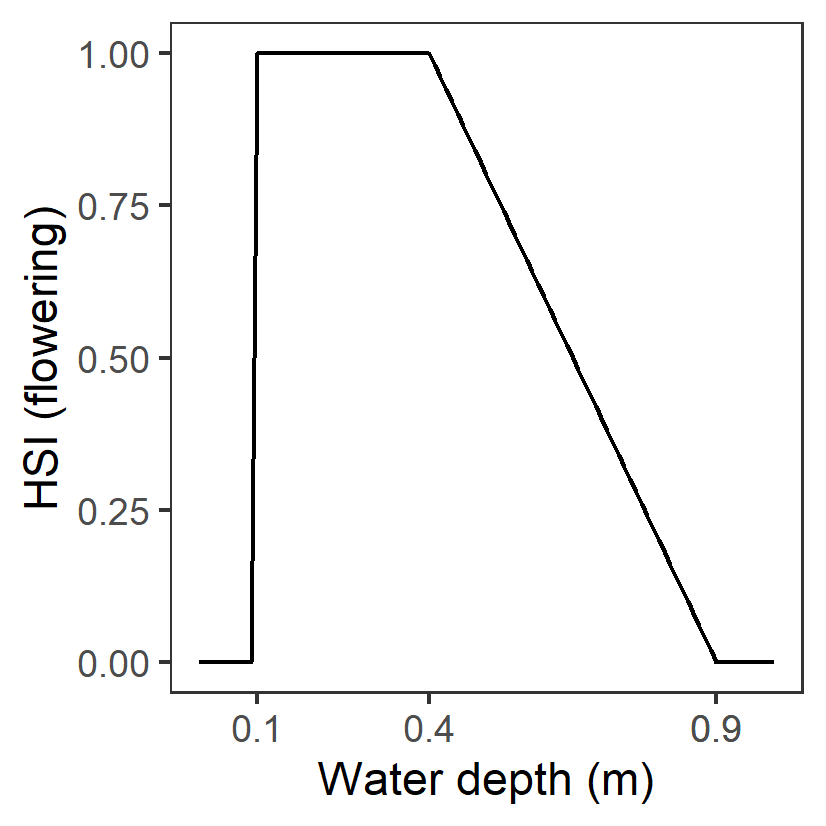

Appendix: Habitat Suitability Index Functions
Habitat suitability functions for Ruppia life stages based on literature review and analyses of HCHB survey data. Note that HSI = 1 under optimal conditions, HSI = 0 under unsuitable conditions, and HSI for sub-optimal is linearly interpolated between these values. Rows shaded in green indicate threshold values were largely sourced from current literature (except text in red), while rows shaded in orange indicate threshold values were estimated.
| Environmental condition (\(i\)) | -…3 | Habitat Suitability Index (\(\Phi\)) | -…5 | Rationale | Source | Comment |
|---|---|---|---|---|---|---|
| Turion viability (Jan 1 – Mar 31) | ||||||
| S: Salinity (g/L) |
Generation II: <135 optimal 135 – 165 suboptimal >=165 unsuitable |
\(\Phi^{via}_{S}\)= \[\begin{cases} 0, S\ge 165\\ 1-\frac{S-135}{165-135}, 135 \le S \lt 165 \\ 1, S \lt 135 \end{cases}\] |

|
Turions once formed will lose viability to high salinities (more vulnerable than seeds) during summer dormancy period. Experiments showed that after 60 days of treatment in salinities of 135 – 180 g/L, only 5 – 10% turions sprouted when transferred back to salinities below 120 g/L. Turions only sprouted in 0 g/L (which is unlikely to occur in Ruppia habitat in the lagoon) after salinity treatment at 165 g/L. |
Kim et al. 2013; Kim et al. 2015 |
- |
| Seed germination (Apr 1 – Jun 30) | ||||||
| S: Salinity (g/L) |
Generation 0: <=0.1 unsuitable 0.1-40 optimal 40-85 suboptimal >85 unsuitable |
\(\Phi^{germ}_{S}\)= \[\begin{cases} 0, S\le 0.1 or S\gt 85\\ 1-\frac{S-40}{85-40}, 40 \le S \le 85 \\ 1, 0.1\lt S \lt 40 \end{cases}\] |

|
R. tuberosa seeds with sediment germinated in salinities of 0 to 85g/L with 14-64% germination, but no germination occurred above 85g/L. R. tuberosa seeds without sediment germinated in 0 - 90g/L. In salinity below 40g/L a germination probability of >50% would be expected for seeds of R. tuberosa, but at salinities between 40 and 90 g/L germination would be<50% | Kim et al. 2013; | - |
| D: Water depth (m) |
Generation 0: Permanent dry: unsuitable <15 days wet (>95% of time): unsuitable 15-42 days wet (>95% of time): suboptimal >42 days wet (>95% of time): optimal Permanently wet: optimal |
- | - | ? | ? | - |
| T: Temperature (°C) |
Generation 0: <4 unsuitable 4-10 suboptimal 10-23 optimal 23-30 suboptimal >30 unsuitable |
\(\Phi^{germ}_{T}\)= \[\begin{cases} 0, T\le 4 or T\gt 30\\ \frac{T-4}{10-4}, 4 \lt T \le 10\\1-\frac{T-23}{30-23}, 23 \lt T \le 30 \\ 1,10\lt T \lt 23 \end{cases}\] |

|
Assumed to be the same as adult growth | - | - |
| L: Light (%SI) | - | - | - | - | - | - |
| A: Algal biomass (g DW m-2) | - | - | - | - | - | - |
| Turion sprouting (Apr 1 – Jun 30) | ||||||
| S: Salinity (g/L) |
Generation 0: <=0.1 unsuitable 0.1-20 suboptimal 20-75 optimal 75-125 suboptimal >125 unsuitable |
\(\Phi^{spr}_{S}\)= \[\begin{cases} 0, S\le 0.1 or S\gt 125\\ \frac{S-0.1}{20-0.1}, 0.1 \lt S \le 20\\1-\frac{S-75}{125-75}, 75 \lt S \le 125 \\ 1,20\lt S \lt 75 \end{cases}\] |

|
Turions of R. tuberosa germinated at salinities of 0 to 125g/L, with 14 - 74% germination, but no germination occurred above 125 g/L. Suboptimal thresholds based on Fig.2 in Kim et al. 2013 |
Kim et al. 2013; Asanopoulos & Waycott 2020 Fig.5 |
- |
| D: Water depth (m) |
Generation 0: <=0.01 unsuitable 0.01-0.2 suboptimal >0.2 optimal |
- |  | Water depth needs to be sufficient to cover plants during growth. | Collier et al. 2017 | - |
| T: Temperature (°C) |
Generation 0: <4 unsuitable 4-10 suboptimal 10-23 optimal 23-30 suboptimal >30 unsuitable |
\(\Phi^{spr}_{T}\)= \[\begin{cases} 0, T\le 4 or T\gt 30\\ \frac{T-4}{10-4}, 4 \lt T \le 10\\1-\frac{T-23}{30-23}, 23 \lt T \le 30 \\ 1,10\lt T \lt 23 \end{cases}\] |

|
Assumed to be the same as adult growth | - | - |
| L: Light (%SI) |
Generation 0: <=5 unsuitable 5-36 suboptimal >=36 optimal |
\(\Phi^{spr}_{L}\)= \[\begin{cases} 0, L\lt 5\\ \frac{L-5}{36-5}, 5 \le L \lt 36 \\ 1,L \gt 36 \end{cases}\] |  | Assumed to be the same as adult growth | - | - |
| A: Algal biomass (g DW m-2) | - | - | - | - | - | - |
| Adult plant growth (Jun 1 – Sep 30) | ||||||
| S: Salinity (g/L) |
Generation 0: <10 unsuitable 10-19 suboptimal 19-124 optimal 124-230 suboptimal >230 unsuitable |
\(\Phi^{adt}_{S}\)= \[\begin{cases} 0, S\lt 10 or S\gt 230\\ \frac{S-10}{19-10}, 10 \le S \lt 19\\1-\frac{S-124}{230-124}, 124 \lt S \le 230\\ 1,19\le S \le 124 \end{cases}\] |

|
A primary factor driving the distribution and abundance of Ruppia in the southern Coorong. The highest abundance of R. tuberosa found at salinities from 19 to 70 g/L and declined sharply in response to increasing salinity from 70 to 109 g/L, but increased again between 116 and 124 g/L. Table 2 in Collier et al. 2017 indicated R. tuberosa occurred at up to 230 g/L in other Lakes but source of data is not clear. Lower threshold source based on Fig.5 in Asanopoulos & Waycott 2020 |
Brock 1982; Kim et al. 2015; Collier et al. 2017; Asanopoulos & Waycott 2020 |
The model relating shoot density to physicochemical conditions explained 73% of variation (Kim et al. 2015) |
| D: Water depth (m) |
Generation 0 & II: < 10 % of time wet: unsuitable >= 10 % of time wet: suitable |
- | - | A primary factor driving the Ruppia distribution in the southern Coorong. Water depth needs to be sufficient to cover plants during growth. |
Kim et al. 2015; Collier et al. 2017 |
R. tuberosa shoots abundances were observed to be highest at water depths between 0.2 and 0.6 m in Coorong. However this depth preference is likely the result of trade-off between light requirement (thresholds included in \(\Phi^{adt}_{L}\)) for photosynthesis and preventing desiccation. |
| T: Temperature (°C) |
Generation 0: <4 unsuitable 4-20 suboptimal 10-23 optimal 23-30 suboptimal >30 unsuitable |
\(\Phi^{adt}_{T}\)= \[\begin{cases} 0, T\le 4 or T\gt 30\\ \frac{T-4}{10-4}, 4 \lt T \le 10\\1-\frac{T-23}{30-23}, 23 \lt T \le 30 \\ 1,10\lt T \lt 23 \end{cases}\] |

|
The optimum temperature for photosynthesis of Ruppia sp. is approximately 20 – 23°C. At temperatures that are ≥30°C biomass declines, and if sustained, there may be no reproductive output. Lower threshold source is unclear | Santamarı́a & Hootsmans 1998 cited in Collier et al. 2017. | The optimum is not specifically for R. tuberosa. |
| L: Light (%SI) |
Generation 0: <=5 unsuitable 5-36 suboptimal >=36 optimal |
\(\Phi^{adt}_{L}\)= \[\begin{cases} 0, L\lt 5\\ \frac{L-5}{36-5}, 5 \le L \lt 36 \\ 1,L \gt 36 \end{cases}\] |

|
There was a significant (p <0.001) effect of the light treatment on biomass of R. tuberosa after 8 weeks of shading. Biomass was significantly reduced in the 5% light treatment compared to the 36, 63, 86 and 100% light treatment. | Collier et al. 2017 cited in Asanopoulos & Waycott 2020 | - |
| A: Algal biomass (g DW m-2) |
Generation 0: <=100 optimal 100-368 suboptimal >368 unsuitable |
\(\Phi^{adt}_{A}\)= \[\begin{cases} 0, A\gt 368\\ 1-\frac{A-100}{368-100}, 100 \lt A \le 368 \\ 1, A \le 100 \end{cases}\] |

|
Surface mats formed by the filamentous algae shade submerged plants and entangle flowers/fruits, causing them to break away from stems before they mature. It was suggested that to maintain and improve the condition and resilience of the Ruppia community, algal mat formation should be reduced to less than 100 g/DW per m2. | Lewis et al. 2022 | - |
| Flowering and seed set (Sep 1 – Dec 31) | ||||||
| S: Salinity (g/L) |
Generation 0: <12 unsuitable 12-47 suboptimal 47-62 optimal 62-100 suboptimal >100 unsuitable |
\(\Phi^{flw}_{S}\)= \[\begin{cases} 0, S\lt 47 or S\gt 100\\ \frac{S-12}{47-12}, 12 \le S \lt 47\\1-\frac{S-62}{100-62}, 62 \lt S \le 100\\ 1,47\le S \le 62 \end{cases}\] |

|
Flower abundance was highest at salinities between ~47 and 62 g/L and flower abundance was lowest at >70 g/L and <47 g/L. The highest seed density was maintained at salinities of 26–62 g/L. Upper and lower thresholds were based on Collier et al. 2017 and Fig.5 in Asanopoulos & Waycott 2020. Original source unclear |
Kim et al. 2015; Collier et al. 2017; Asanopoulos & Waycott 2020 |
The model relating flower density to physicochemical conditions explained 76% of variation but only 27% of the seed abundance variance was explained (Kim et al. 2015). |
| D: Water depth (m) |
Generation 0: <0.1 unsuitable 0.1-0.4 optimal 0.4-0.9 suboptimal >0.9 unsuitable |
- |  | R. tuberosa flowers need to reach the water surface for pollination. The highest density of flowering has been observed in water depths from 0.1 to 0.4 m and seed density of mature plants declines at depths greater than 0.4 m. Upper thresholds based on Fig.4 in Kim et al. 2015. |
Kim et al. 2015; Collier et al. 2017; |
Upper threshold for seed production is 0.8m (>0.8m unsuitable) but only 27% of the seed abundance variance was explained (together with salinity), therefore thresholds for flowering was adopted here |
| T: Temperature (°C) |
Generation 0: <4 unsuitable 4-20 suboptimal 20-23 optimal 23-30 suboptimal >30 unsuitable |
\(\Phi^{flw}_{T}\)= \[\begin{cases} 0, T\le 4 or T\gt 30\\ \frac{T-4}{10-4}, 4 \lt T \le 10\\1-\frac{T-23}{30-23}, 23 \lt T \le 30 \\ 1,10\lt T \lt 23 \end{cases}\] |

|
Assumed to be the same as adult growth | - | - |
| L: Light (%SI) |
Generation 0: <=5 unsuitable 5-36 suboptimal >=36 optimal |
\(\Phi^{flw}_{L}\)= \[\begin{cases} 0, L\lt 5\\ \frac{L-5}{36-5}, 5 \le L \lt 36 \\ 1,L \gt 36 \end{cases}\] |

|
Assumed to be the same as adult growth | - | - |
| A: Algal biomass (g DW m-2) |
Generation 0: <=100 optimal 100-184 suboptimal >184 unsuitable |
\(\Phi^{flw}_{A}\)= \[\begin{cases} 0, A\gt 184\\ 1-\frac{A-100}{184-100}, 100 \lt A \le 184 \\ 1, A \le 100 \end{cases}\] |

|
Surface mats formed by the filamentous algae shade submerged plants and entangle flowers/fruits, causing them to break away from stems before they mature. It was suggested that to maintain and improve the condition and resilience of the Ruppia community, algal mat formation should be reduced to less than 100 g/DW per m2. Upper thresholds derived from analysis of HCHB survey data (Figure 8.9) | Lewis et al. 2022 | - |
| Turion formation (Sep 1 – Dec 31) | ||||||
| S: Salinity (g/L) |
Generation 0: <40 unsuitable 40-70 suboptimal 70-160 optimal 160-230 suboptimal >230 unsuitable |
\(\Phi^{tur}_{S}\)= \[\begin{cases} 0, S\lt 40 or S\gt 230\\ \frac{S-40}{70-40}, 40 \le S \lt 70\\1-\frac{S-160}{230-160}, 160 \lt S \le 230\\ 1,70\le S \le 160 \end{cases}\] |
|
Thresholds were determined considering several sources: 1) The highest turion densities in the Coorong have been observed at salinity between ~124 g/L and 160 g/L and are most likely to occur where salinities are over 70 g/L. This study was conducted during a year with extremely high salinities in the Coorong; 2) Analysis of 2020 – 2021 HCHB survey data indicate high turion abundance between ~70 – 120 g/L but can occur in salinity at as low as ~40g/L; 3) Upper threshold based on Fig.5 in Asanopoulos & Waycott 2020 | - | - |
| D: Water depth (m) |
Generation 0 &II: < 10 % of time wet: unsuitable >= 10 % of time wet: suitable |
- | - | Desiccation during the reproductive window (spring/summer) prevents turion production, reducing the regeneration of the population in subsequent growing seasons. |
Kim et al. 2015; Collier et al. 2017; Asanopoulos & Waycott 2020 |
Highest densities of turions were observed in 0.1–0.4 m water depths. However this depth preference is likely the result of trade-off between light requirement (thresholds included in \(\Phi^{tur}_{L}\))) for photosynthesis and preventing desiccation |
| T: Temperature (°C) |
Generation 0: <4 unsuitable 4-20 suboptimal 10-23 optimal 23-30 suboptimal >30 unsuitable |
\(\Phi^{tur}_{T}\)= \[\begin{cases} 0, T\le 4 or T\gt 30\\ \frac{T-4}{10-4}, 4 \lt T \le 10\\1-\frac{T-23}{30-23}, 23 \lt T \le 30 \\ 1,10\lt T \lt 23 \end{cases}\] |
|
Assumed to be the same as adult growth | - | - |
| L: Light (%SI) |
Generation 0: <=5 unsuitable 5-36 suboptimal >=36 optimal |
\(\Phi^{tur}_{L}\)= \[\begin{cases} 0, L\lt 5\\ \frac{L-5}{36-5}, 5 \le L \lt 36 \\ 1,L \gt 36 \end{cases}\] | Assumed to be the same as adult growth | - | - | |
| A: Algal biomass (g DW m-2) | - | - | - | - | - | - |